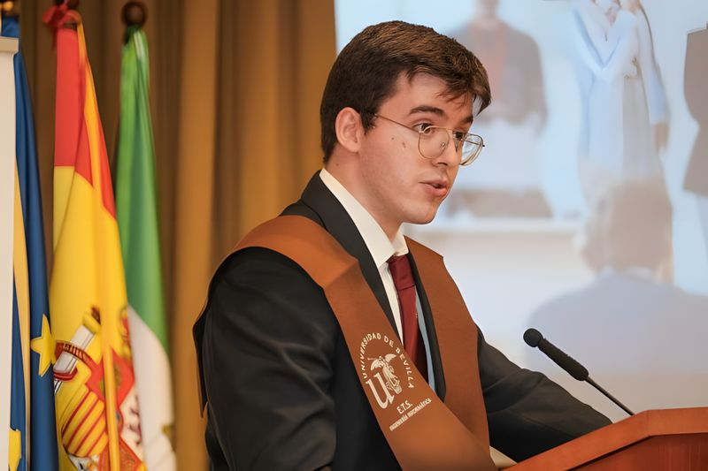
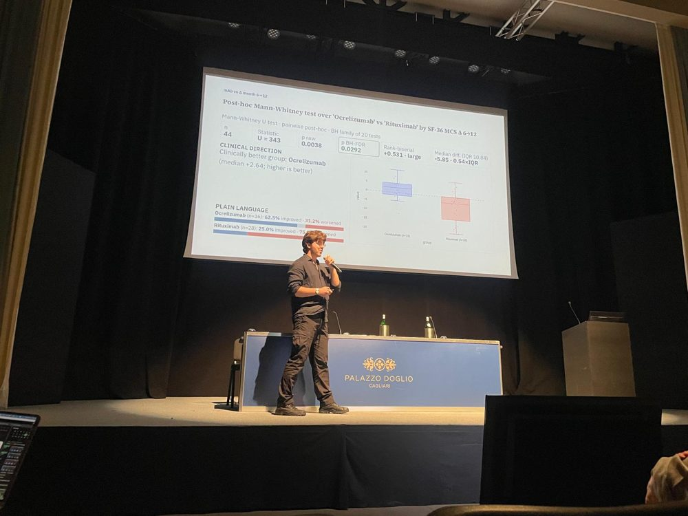

Master's in Computational Intelligence Upcoming
Córdoba, ESUniversity of Córdoba
Starting in October 2026: advanced machine learning, soft computing and intelligent systems, building on my research work with clinical and biomedical data.
Software Engineer · Machine learning for health
I build statistical and deep-learning pipelines that turn clinical, genomic and survey data into answers researchers can use. Currently a researcher in neurology at IMIBIC, Córdoba, and from October 2026 a Master's student in Computational Intelligence at the University of Córdoba.
Córdoba, SpainES · EN C2 · FR · IT · ZHOpen to master's & research roles

About
I graduated in Computer Engineering (Software Engineering) from the University of Seville with a GPA of 8.53/10, in the top 5% of my class, and honours in five subjects. My final degree project was an AI model built with the Teléfono de la Esperanza, an NGO that offers free psychological support.
Since then my work has moved toward medicine. At the Maimonides Biomedical Research Institute of Córdoba (IMIBIC) I have worked on RNA-Seq, 16S and variant-calling pipelines, and I now apply statistics and machine learning to patient data in the Neuroplasticity and Oxidative Stress group, studying Alzheimer's disease and multiple sclerosis. I am also part of the Spanish node of 3TR, the largest European research project in immunology to date, and was invited to present our multiple sclerosis results at its annual meeting in Cagliari. In October 2026 I start a Master's in Computational Intelligence at the University of Córdoba. I am also first author of a deep-learning paper on predicting type 2 diabetes from gut microbiota.
Outside the lab I have taught, coached and cared for children in Thailand, Romania and Italy. Those months taught me to stay calm under pressure, communicate across languages and take responsibility when nobody else can.
Experience
University of Córdoba
Starting in October 2026: advanced machine learning, soft computing and intelligent systems, building on my research work with clinical and biomedical data.
3TR consortium · Spanish node (IMIBIC)
Invited to the annual meeting of 3TR, the European public–private research project on immunology, in Cagliari (Sardinia) to present our multiple sclerosis results on behalf of the Spanish node.

IMIBIC · Neuroplasticity and Oxidative Stress group
I apply statistics and machine learning to patients' clinical, biochemical and survey data to help understand neurological diseases such as Alzheimer's disease and multiple sclerosis.
I am also part of the 3TR project ↗, the largest European research project in immunology to date, working in its Spanish node on multiple sclerosis and the relationships between biomarkers, drug profiles and patient-reported outcomes (PROMs).
School affiliated with Rajabhat University
After the scholarship in China I taught English, Physics and Physical Education to hundreds of students aged 3 to 16, often leading classes alone. In the afternoons I also took on management tasks and childcare.
Teléfono de la Esperanza (NGO)
Through an agreement with this NGO, which provides free psychological assistance, I developed an artificial-intelligence model designed to support its helpline work.
Maimonides Biomedical Research Institute of Córdoba (IMIBIC)
University internship in bioinformatics and biostatistics for genomics and proteomics: RNA-Seq, 16S, variant calling and machine-learning data-science pipelines.
GPIC · Hospital Universitario Virgen Macarena
Installed and configured the access-point infrastructure so the whole hospital complex stays connected, applying wired and wireless networking protocols in a critical-care environment where downtime is not an option.
Happy Faces, Transylvania
Two months with an international team, providing round-the-clock care to children across many roles, from running activities to managing groups.
Italian host family
Looked after the house, three children and several animals in exchange for room and board.
Research article · First author
Caballero-María P, Caballero-Villarraso J, Arenas-Montes J, Díaz-Cáceres A, Castañeda-Nieto S, Alcalá-Díaz JF, Delgado-Lista J, Rodríguez-Cantalejo F, Pérez-Martínez P, López-Miranda J, Camargo A.
Applied Sciences (MDPI) 2025; 15(4):2228 · ISSN 2076-3417 · Engineering, Multidisciplinary
Education
University of Córdoba
University of Seville · ETS Ingeniería Informática
Valedictorian, class of 2025
Subjects with honor degree (Matrícula de Honor)
Beijing Institute of Technology (BIT Zhuhai)
Selected through a University of Seville–BIT agreement. Covered statistical foundations through to state-of-the-art algorithms, taught by leading Chinese academics and practitioners.
Reina Sofía University Hospital
Dementia, Parkinson's and ALS; multiple sclerosis diagnosis and treatment; airway, haemodynamic and cerebral-injury management for neurological patients.
Saint Victoria High School
Skills
Scale: A1 · A2 · B1 · B2 · C1 · C2
Around the world
Drag the globe to spin it. Hover or tap a country to see what I did there.
Spain
Photo reel
References
"Given his proven track record, his honors, his published research, and his prior success at your institution, I am certain he possesses the potential to be a great asset."
Dr. María José Escalona Cuaresma
Full Professor · ETS Ingeniería Informática, University of Seville
It is a genuine pleasure to recommend Pablo Caballero María for your Master's program in Computer Science and Technology. I know Pablo from his time as a highly dedicated student in my course, Planning and Management of IT Projects (PGPI), during the 2024 academic year at the University of Seville.
Pablo has always stood out. He finished his Software Engineering degree with a notable academic record (a Grade Point Average of 8.53 out of 10). While he achieved the Honor Degree in five subjects, his consistent high performance throughout my course and his overall GPA speak to his quality and dedication.
His theoretical foundation is complemented by his research experience as the first author of a paper published in a first quartile journal (MDPI's Applied Sciences). This achievement, which involved applying deep learning models to medical data, clearly demonstrates the level of ambition and technical ability he will bring to your program. His familiarity with the BIT environment, having already completed a competitive scholarship program in Artificial Intelligence at your institution with a GPA of 97 out of 100, is a distinct advantage.
Pablo is a mature, highly responsible young professional. Given his proven track record, his honors, his published research, and his prior success at your institution, I am certain he possesses the potential to be a great asset in your Computer Science and Technology program, and I recommend him with the utmost confidence.
"I have observed an impressive evolution in his maturity, adaptability, initiative, creativity and commitment to the field of study."
Dr. María Dolores Frau García
Associate Professor · Dept. of Applied Mathematics I, University of Seville
I am pleased to be writing this letter of recommendation of Pablo Caballero María, a promising student. I've had the pleasure of teaching him two subjects while he was studying Computer Engineering at Seville: one in the first semester of the first course, Introduction to Discrete Mathematics (Number Theory), and another in the second semester of the second course, Discrete Mathematics (Graph Theory). I have observed an impressive evolution in his maturity, adaptability, initiative, creativity and commitment to the field of study.
Pablo has been amongst the top 5 of his class while he has been my student. I remember him always attentive to explanations and I have verified that he is a responsible and reliable person. He has shown me that he is a hard worker, and that he is genuinely interested in learning.
I think that Pablo has acquired many skills that fit into the objectives of your program of studies. He is an outstanding student with so much to offer, so I strongly recommend accepting his application.
"Pablo came all the way from Spain with an open mind, positive energy, and a genuine willingness to learn, share, and contribute. He adapted beautifully to our school environment and connected naturally with students of all ages. His background in IT and computer engineering was also a great contribution to our learning activities and school projects."
School host · Teaching program
"Pablo was consistently kind, responsible, and enthusiastic. His positive attitude and calm demeanor made him a reliable presence in any situation. He worked well under pressure, communicated clearly, and showed genuine care and patience with the children. We would gladly welcome him back in the future."
Summer camp host · Happy Faces
"Pablo is a wonderful guy… he likes to spend time with kids, he enjoys a lot to play with them. He is mature and responsible, honest and kind! He can help around house without any problems; he really wants to jump in the culture."
Host family
Contact
Open to master's programs, research positions and data-science roles in health and biomedicine.
pablo.caballero@imibic.org
Location
Córdoba, Spain